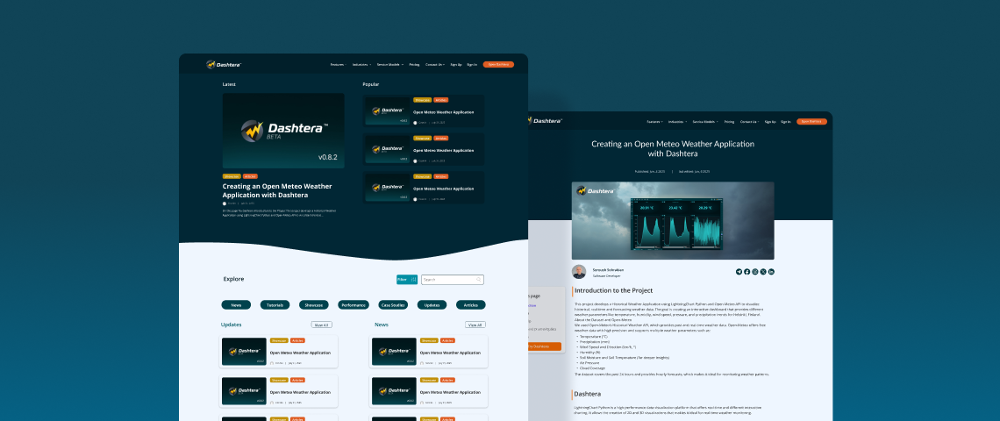
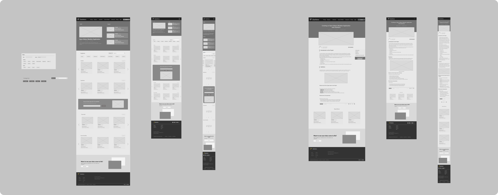
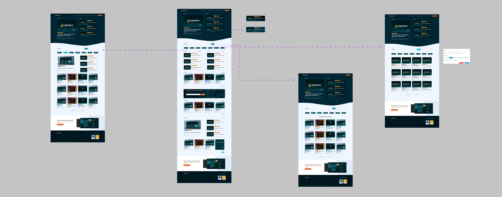
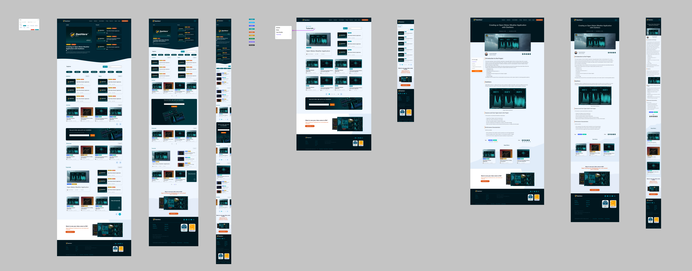

Dashtera Blog

DASHTERA is a platform that helps users work with and visualize data through interactive data visualization tools.
I was responsible for developing the UX/UI design for the DASHTERA blog, from the initial wireframes through the high-fidelity mockups and implementation. I worked closely with a senior designer throughout the design process, incorporating feedback and iterating on the concepts. I also worked with the developer during implementation, overseeing the design, identifying bugs, and suggesting improvements where needed.
The Challenge
As the product evolved, the team needed a dedicated blog where users could discover content related to DASHTERA. The goal was to create a clearer and more intuitive way for users to discover and explore DASHTERA content.
The blog needed to accommodate different types of content, from tutorials and product updates to use cases and announcements, while making it easy for users to search, filter, and find related articles. The design also needed to provide a structure that could scale as more content was added over time.
The Process
I began by researching the content structure and exploring different ways the blog could organize and present its articles. From there, I created several wireframe concepts and discussed them with the team and senior designer. Based on the feedback, I iterated on the layouts and refined the overall structure before moving into high-fidelity designs. Once the basic wireframe was approved, I moved on to developing the visual design and expanding the different sections of the blog.
Structuring the blog
The initial concept was based around two main pages: a blog homepage and an individual article page.
The homepage was designed to give users an overview of the latest and most relevant content. It included a hero section featuring the latest article, followed by the three most popular articles. Below this, users could search and filter the available content by category.
The second page was the individual article view, where users could read the full article, share it, and discover related content at the bottom of the page.

An interesting part of the project came during implementation, when we discovered some technical constraints with the original navigation model.
The initial idea was to keep all article discovery and filtering on the main blog page. However, this created a problem when users navigated to a category from an article page. We needed a way for users to explore that category independently while still being able to search, filter, switch between categories, and return to the main blog.

To solve this, I adapted the original information architecture and introduced a third page dedicated to individual categories. This allowed users to explore a specific content area in more depth while keeping the navigation between the blog, categories, and individual articles clear and consistent.

Implementation & QA
One of the reasons this project was particularly valuable for me was that my role extended beyond the design phase.
I was involved in overseeing the implementation with the developer, reviewing the work as it was built, reporting bugs, and identifying areas where the implementation could be improved. This gave me the opportunity to see how design decisions translated into a real product and to adapt the design when technical limitations or implementation issues emerged.
Outcome
The final blog design was well received by the CEO and stakeholders and was successfully moved into implementation. The project resulted in a more structured experience for discovering DASHTERA content, with dedicated spaces for the main blog, individual articles, and category exploration.
Reflection
This project taught me that designing a product is not always a linear process. Some of the most important design decisions happened after the initial concepts had already been created, when we encountered technical constraints during implementation.
It also gave me more experience thinking about information architecture and content discovery, particularly how different pages and navigation patterns can work together to help users find related content.
Working closely with a senior designer was another valuable part of the project. Their feedback helped me improve my approach to layout, hierarchy, and visual design, while working directly with a developer gave me a better understanding of how design decisions need to adapt to technical realities.